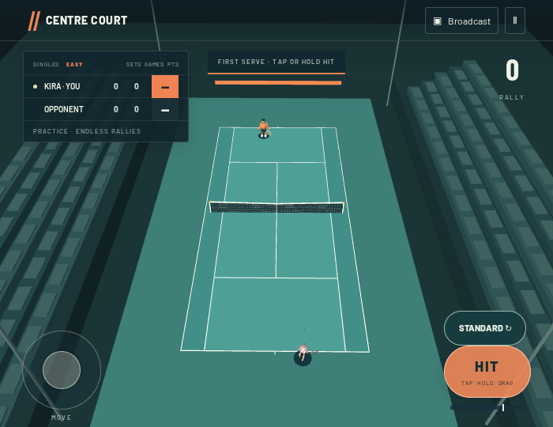
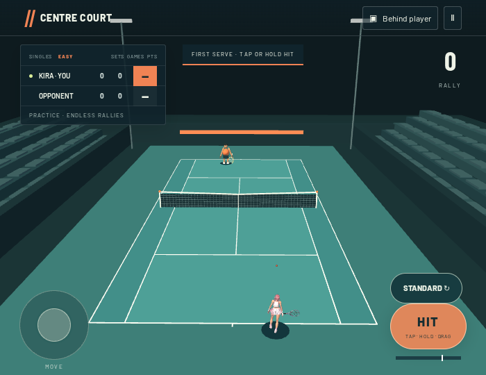
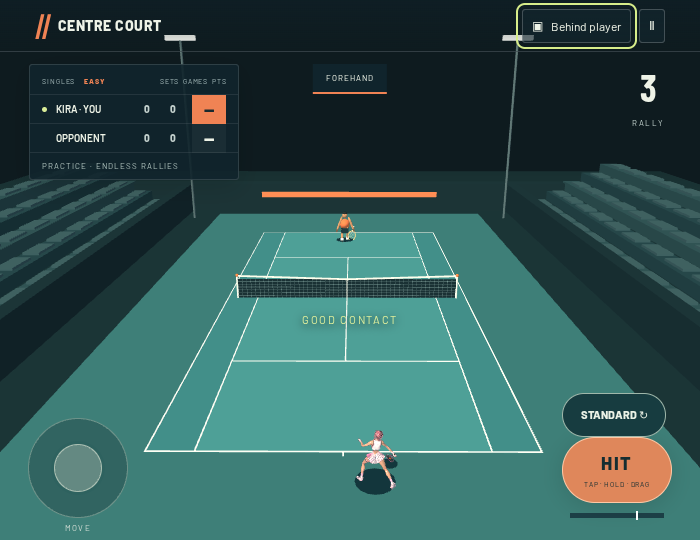
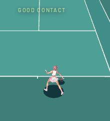
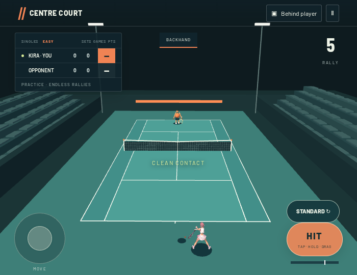
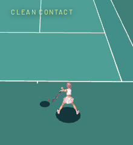
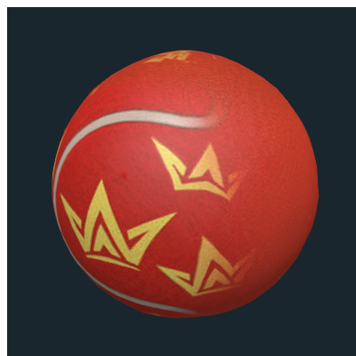
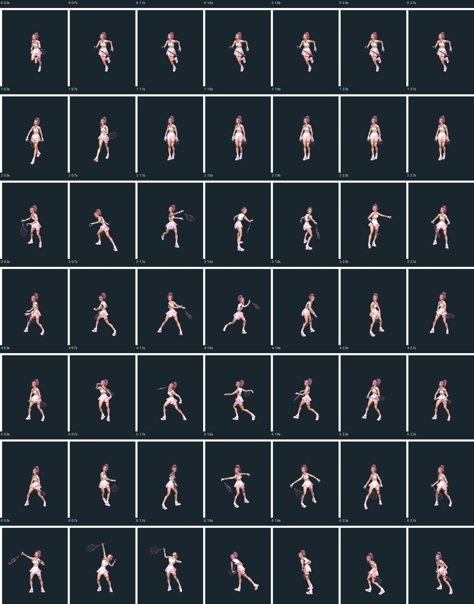
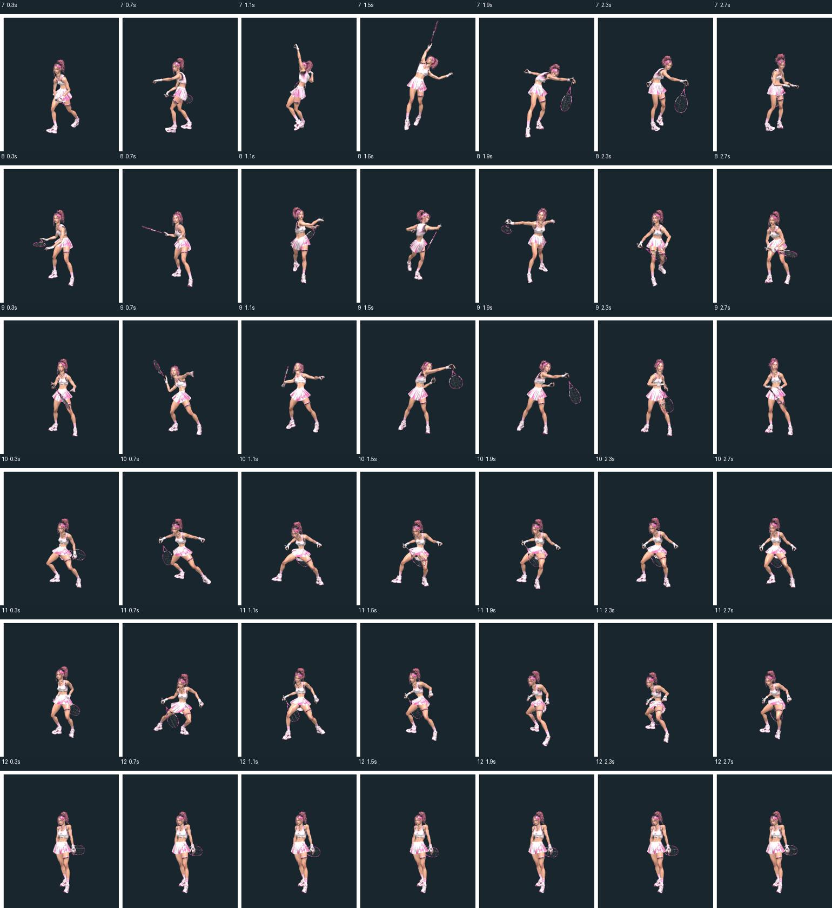
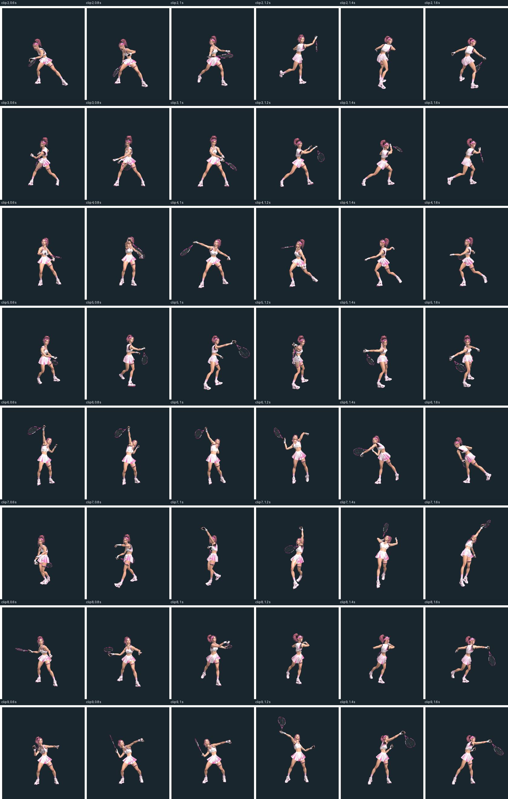

Actual production game, driven through its input handlers. Pink Valkyrie, the separately attached racket and regulation-scale Royal Rally GLB render in the playable court. Contact images pause immediately after a successful return; the pause overlay is hidden for the capture.
Play Centre Court · Contact and rendering diagnostics · Browser camera verification






The regulation ball is small in the full-court cameras. The following isolated material preview supplements the gameplay evidence above; it is not gameplay evidence itself.

Rows use source clip indices; the semantic registry records estimated contact frames, durations, loops and confidence. Raw sampled joint positions and clip IDs.



Physical iPhone testing is still required. Medium-confidence generated slice, lob, volley and shuffle mappings require owner visual review. Some open fingers, foot sliding and stretched-contact gaps remain. No GOAL 003 AI or GOAL 004 stadium work is included.